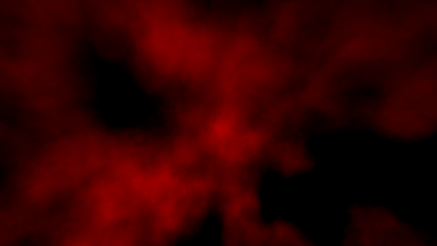
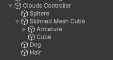

Structure
While simple, the structure of this dynamic cloud system can be confusing. Here, we'll review the most important parts and what they do.
Individual pages for each component/class contains a more in-depth view of how to configure it.
Clouds Controller
The Clouds Controller is responsible for managing all steps of the rendering process except for the rendering itself. It stores settings related to performance and visuals, and most features are enabled or disabled in this component. To add one to your scene, you can either add it by right-clicking in the hierarchy window and selecting "Shaped Clouds/Clouds Controller", or creating an empty GameObject and adding the component "Shaped Clouds/Clouds Controller" to it.
When adding the object through the hierarchy window, a child object will also be created, with a Base Noise Renderer, more on what it does below.
Base and Final textures
Most of the optimization of the system comes from using two separate textures at lower resolutions than the render target.
The first texture is called the Base Texture, and is particularly low resolution/blurry. This texture determines the overall shape of clouds, and is how the system can generate clouds of any shape. Higher detail clouds will of course require higher resolutions, but simple noise and shapes won't feel the difference and are effectively free in terms of performance.
All included shaders that render to this texture blend additively. As a result, their order doesn't matter, and negative colors are valid and will remove clouds from the sky, rather than add.

The second texture is called the Final Texture, and is how the appearance of clouds is determined. This is where clouds get their look, including receiving light from the Sun/Moon and how detailed they are. Low resolutions are more noticeable, but the Final Texture can usually still be kept at half or third resolution for better performance.
Cloud Filter
Collection of settings determining how the Base Texture is rendered to the Final Texture. Has a specialized shader that can be replaced if modifications are needed.
Blur
Between the Base Texture being used to render the Final Texture, and the Final Texture being used to render clouds to the screen, each of those clouds can optionally be blurred. By using a bidirectional blur, sharp edges that would make the low resolution more obvious can be smoothened, resulting in a cleaner looking sky.
Configuration is relatively simple, but check the page for comparison images.
Cloud Renderers
Cloud Renderers are MonoBehaviours inheriting from the CloudRenderer abstract class, and are used to render objects to the Base Texture. These are the heart of the system, and what controls the shape clouds will have. Anything can be rendered with a Cloud Renderer, but the asset only comes with two options, capable of doing almost anything needed.
These objects should be put as direct children of a Clouds Controller, which will be the controller responsible for rendering it. Children of children are not included and won't be rendered.
Here's an example of how cloud renderers should be organized, taken directly from the "Meshes" demo:

Base Noise Renderer
Generates random noise to act as the overall shape of clouds. The noise texture itself can be modified, as well as the amount of layers and their values (limit is 8).
Cloud Mesh Renderer
Renders a mesh or a renderer to the Base Texture.